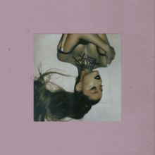
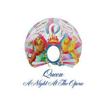

Disclaimer: I am so out-of-date on music, most of you wouldn't even know what I listen to and understand the concept. This is what I searched up on google...
To create this list of artists and music geniuses, I pulled a few strings to create an music list that would be "comepletely unbias" and "legal". I contracted a private company to "legally gain" information from others to receive a final product.
Song Name
Song Release Date
Artist
Album Cover
Song
Final Thoughts
1. "Señorita"
June 21, 2019
Camila Cabello and Shawn Mendes
This song I have heard multiple times on the radio. I would have placed this song lower, but I couldn't be bothered changing the placement from where it was.
2. "bad Guy"
March 29, 2019
Billie Eilish
Billie Eilish's "bad Guy" is actually still on the Global 50 songs chart. Being released in March, this song is still commonly played on radio stations and in playlists.
3. "Sunflower"
October 18, 2018
Post Malone and Swae Lee
"Sunflower" was made for the main purpose of the opening of "Spider-Man: Into the Spider-Verse." The movie was a great success, and the song became wildly popular. Although the full song wasn't played during the movie, the song was popularized by the movie. Despite the song being release in 2018, the song has kept it's relevance and has earned its spot on the "Top 5's" Top 5 Songs of 2019
4. "7 Rings"
January 18, 2019
Ariana Grande

I had no idea Ariana Grande created this song, mainly because I found this song as "undeserveding" to be in the top 5 list. Apparently, lots of people enjoyed this song, so I just left as it was.
5. "Old Town Road: Remix"
May 17, 2019
Lil Nas X and Billy Ray Cyrus
I would have placed this in 4th than 5th place. Created after the orginal "Old town Road", which was a single released by Columbia Records, Lil Nas X struck again with this remix. Country Singer, Billy Ray Cryus (father of Miley Cryus) had received wind of the song and decided with Lil Nas X to create a remix. After this release, the song was a staple of what the internet can influence.
Honorable Mention: Bohemian Rhapsody
"Bohemian Rhapsody"
October 31, 1975
October 31, 1975

This Song is the Top song released not released the Last Decade. Unlike the other songs in this tier list, I believe this song is Superior to the rest of chart. The song creates vivid images, and giving the audience their own way of interpreting the song. This can even be considered 4 songs in 1! A Cappella starts off the song, soon changing to a ballad. Midway through the song a OPERA starts, which is then transitions to Rock. For the ending, it transitions to a coda from the beginning. This song gives more musical expression than any of these songs, and is truely somethign you have never heard before.